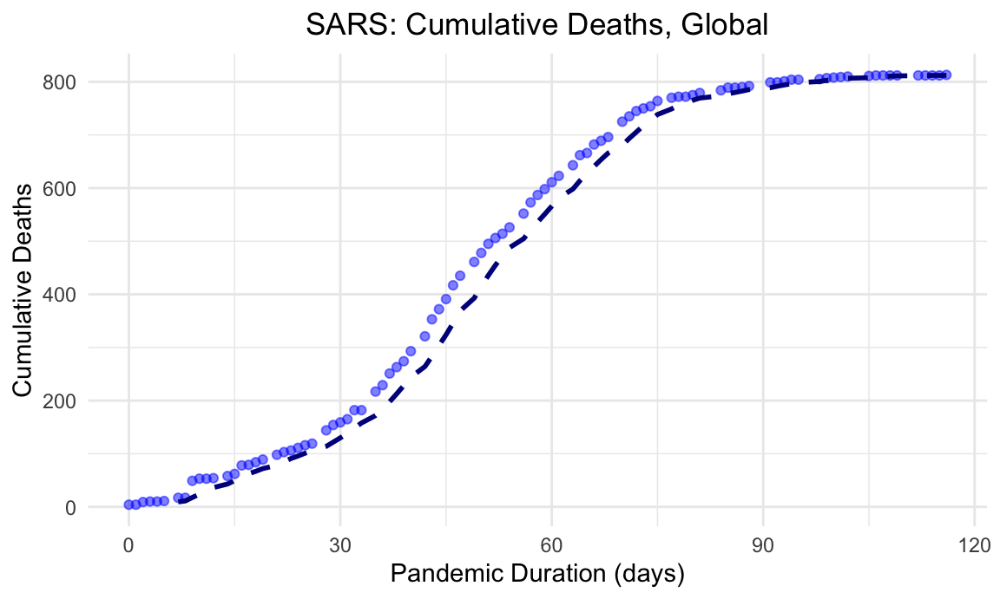
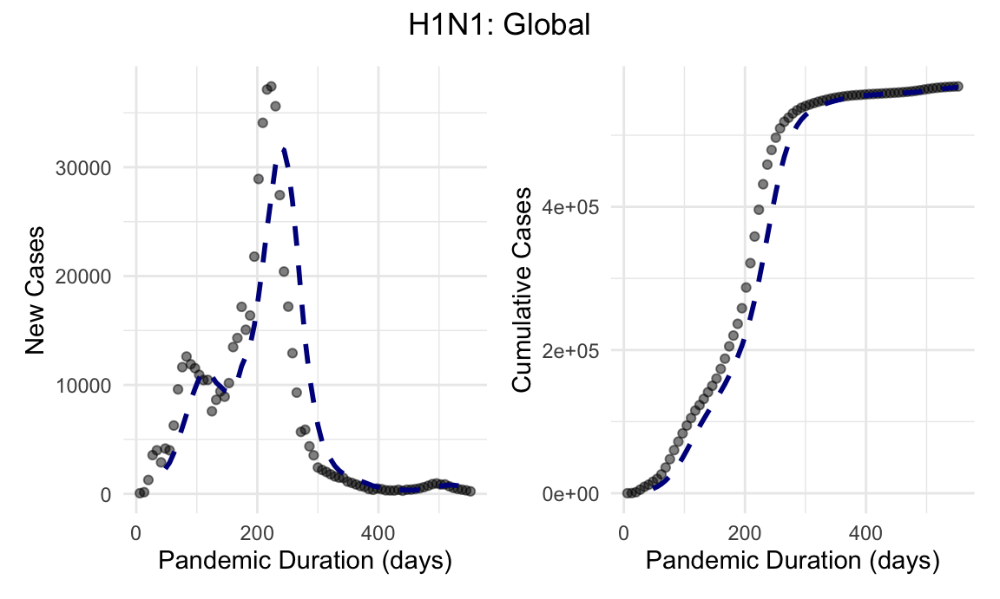
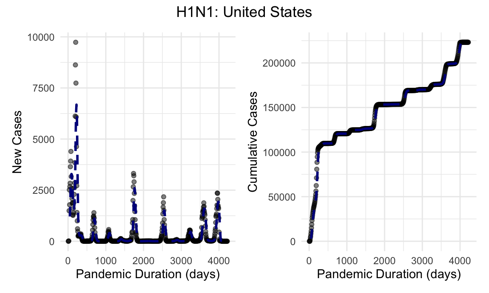
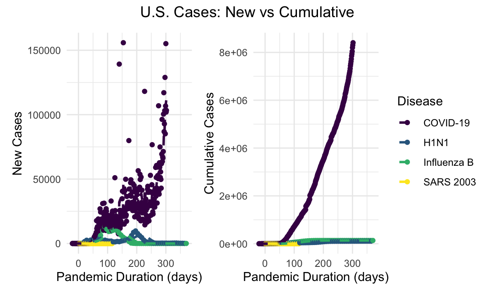
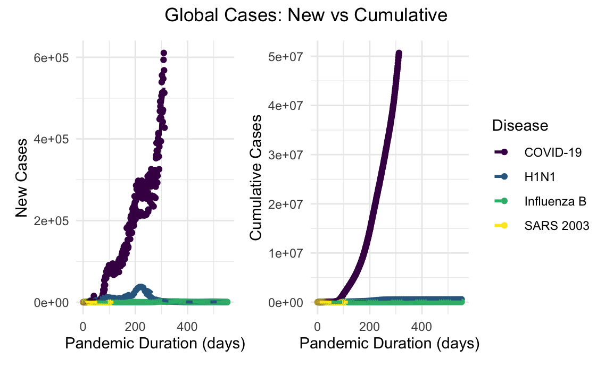
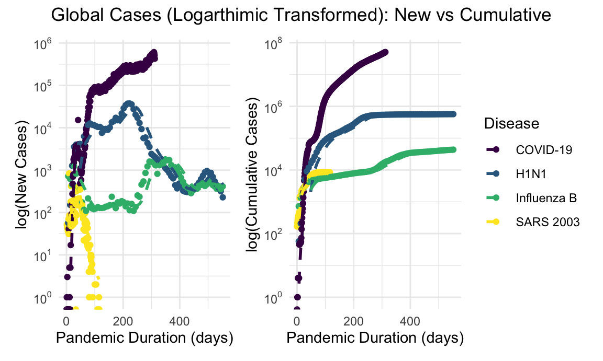
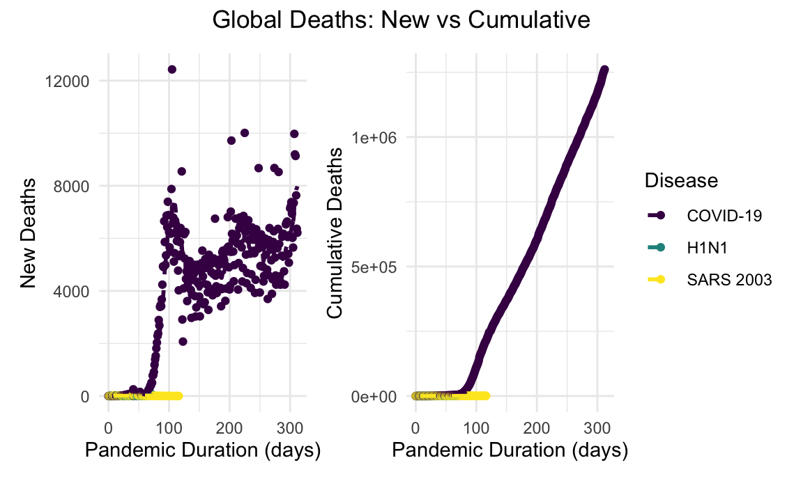
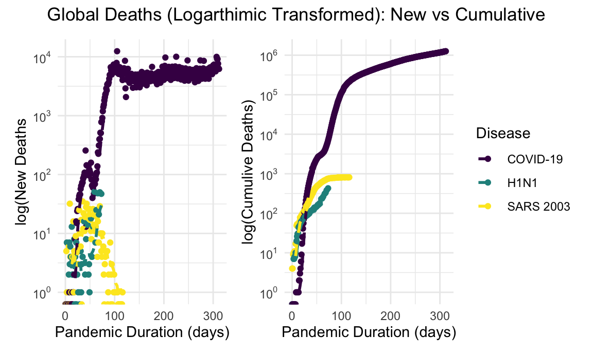

Full Report
Motivation and Goals
As of the beginning of November 2020, the total deaths due to COVID-19 surpassed 1.3 million globally. Further, as reported by WHO, the total confirmed cases exceeded 57.8 million worldwide.
Motivation
Given the scale of this pandemic, the project was inspired by the idea of trying to understand its direction by comparing it to prior pandemics. With uncertainty and anxiety accompanying it, and no definitive foreseeable future, we were interested in exploring how the previous similar pandemics, caused by similar pathogens, turned out over time.
Goals
By undertaking this project, we were hoping to identify and establish any existing pattern in past outbreaks, and then to look for predictability in possible direction(s) COVID-19 could turn to in the near future.
Questions
Initial
The questions of interest were to investigate on the expected severity of COVID-19 based on information provided by prior pandemics, and to predict the length and direction of the current pandemic based on the history of similar infectious pandemics. Evaluation of time-series was the primary focus of the project, intially.
Additional
What might the basic reproductive rates had been in the past pandemics? Basic reproductive rate, or \(R_0\) for short, is a measure that describes the ability of a pathogen to spread in a population. It is the average of secondary infections caused by an infectious individual; which we thought is a critical element in pandemics analyses.
[How did these questions evolve over the course of the project? What new questions did you consider in the course of your analysis?]
Data
Multiple datasets were used from various shareable online sources for analysis and comparison to COVID-19. Complete list of data-descriptions is provided under the “Datasets” tab.
Most of the datasets were available in ready-to-use CSV formats, requiring some basic manipulations to get them in a readable and tidy format. Since up-to-date data is important in analysis of prior pandemic trends, data scraping from the CDC website for updated COVID-19 data was used. Data scraping was done using JSON APIs with the GET function from the httr package, along with the fromJSON() function from the jsonlite package.
Data for COVID-19 in Chicago required filtering the peak timeframe, up until the completion of this report (December 4th 2020), by weeks. This combined dataframe was then compared to the available Spanish flu record of 7 weeks.
Also, the data with \(R_0\) and other statistical comparisons between the four pandemics was extracted by scraping thelancet.com. Scraped data first had to be saved as a dataframe in order to make it compatible with the rest of the website. Information on \(R_0\) for the four pandemics, incubation period, interval between symptoms to infectivity, and proportion with mild illness was retained and formatted into a table. Data was again reformatted to long in order to show \(R_0\) by disease-type graphically.
After the preliminary steps were taken to get the datasets in working forms, all the data files were then stored in .rda compressed format for easy access and reproducibility across the site.
In order to create a choropleth world map of disease cases, country polygon data was obtained from this GitHub repo. The file was read in using function geojson_read() from the geojsonio package. For COVID-19, H1N1, and SARS, the cumulative cases and cumulative deaths for each country were taken and combined into 1 large dataframe. This dataframe was then merged with the spatial json file matched by country name using merge() function from sp package.
Exploratory Analysis
Given the rapidly changing dynamics on a daily basis of the current Coronavirus, the analysis of COVID-19 would understandably need an ongoing update as well for a complete and thorough comparisons. Nevertheless, the comparisons did provide some understanding on how pandemics shape out in general, and helped relieve some anxiety and uncertainty regarding them. Hopefully, it will do the same for our readers.
We started our analysis by comparing the first pandemic of the 20th century, named Spanish flu, which has its descendant virus remaining till today as influenza virus. Although the first historically documented pandemic was the Plague of 430 B.C., not much of the recorded data is available for pandemics prior to the 20th century. Recently, efforts have been made to understand the disease history by studying remnants of human remains such as the teeth. Paleontologists and scientists have identified the DNA of the bacteria that caused the Black Death pandemic over 5,000 years ago.
Spanish Flu
Spanish flu was a viral infection just as COVID-19, which lasted from early 1918 to spring of 1920. With the data available, or lack of, we were able to compare its impact in Chicago. Data was recorded at the peak of the outbreak, for 7 weeks. For parallel comparison, data was extracted for peak 7 weeks as well for COVID-19, from the City of Chicago databank.
# Spanish flu versus COVID-19
## Spanish flu data
spanish_rawdf = read.csv("./data/spanish_flu_chicago.csv")
save(spanish_rawdf, file = "spanish_rawdf.rda")
spanish_df =
spanish_rawdf %>%
janitor::clean_names() %>%
group_by(week) %>%
summarize(mortality = n())
plot_1 =
spanish_df %>%
plot_ly(
x = ~week, y = ~mortality, color = ~mortality, type = "bar") %>%
layout(title = "Spanish Flu",
xaxis = list(title = "Spanish flu"),
yaxis = list(title = "Mortality"))
## Covid-19 Chicago data
covid19_chicago_rawdf = read.csv("./data/covid19_chicago.csv")
save(covid19_chicago_rawdf, file = "covid19_chicago_rawdf.rda")
covid19_chicago =
covid19_chicago_rawdf %>%
janitor::clean_names() %>%
filter(deaths_total != 0) %>%
mutate(
date = as.Date(date, "%m/%d/%y")
)
row1 = covid19_chicago %>%
filter(date >= as.Date("2020-04-07") & date <= as.Date("2020-04-13")) %>%
summarize(
week = 1,
mortality = sum(deaths_total))
row2 = covid19_chicago %>%
filter(date >= as.Date("2020-04-14") & date <= as.Date("2020-04-20")) %>%
summarize(
week = 2,
mortality = sum(deaths_total))
row3 = covid19_chicago %>%
filter(date >= as.Date("2020-04-21") & date <= as.Date("2020-04-27")) %>%
summarize(
week = 3,
mortality = sum(deaths_total))
row4 = covid19_chicago %>%
filter(date >= as.Date("2020-04-28") & date <= as.Date("2020-05-04")) %>%
summarize(
week = 4,
mortality = sum(deaths_total))
row5 = covid19_chicago %>%
filter(date >= as.Date("2020-05-05") & date <= as.Date("2020-05-11")) %>%
summarize(
week = 5,
mortality = sum(deaths_total))
row6 = covid19_chicago %>%
filter(date >= as.Date("2020-05-12") & date <= as.Date("2020-05-18")) %>%
summarize(
week = 6,
mortality = sum(deaths_total))
row7 = covid19_chicago %>%
filter(date >= as.Date("2020-05-19") & date <= as.Date("2020-05-25")) %>%
summarize(
week = 7,
mortality = sum(deaths_total))
covid19_chicago_df = bind_rows(row1, row2, row3, row4, row5, row6, row7)
plot_2 =
covid19_chicago_df %>%
plot_ly(
x = ~week, y = ~ mortality, color = ~ mortality, type = "bar") %>%
layout(title = "Spanish Flu vs COVID-19: 7-Week Peak (Chicago)",
xaxis = list(title = "Weeks"),
yaxis = list(title = "Mortality"))
# Comparison-plot
subplot(plot_1, plot_2, shareX = TRUE, shareY = TRUE)The graphs show similar parabolic curves, with the peak of maximum mortality due to Spanish flu in a week over 6 times the mortality of the current pandemic. Tracing the bars displays total mortality for a given week.
SARS-CoV-1
Next we compared the first pandemic of the 21st century, Severe acute respiratory syndrome or SARS-2003 for short, to COVID-19. With better records of data collection and availability by then, we were able to analyze the history of SARS at a global scale and were able to compare it to COVID-19 at a greater detail.
# SARS 2003 global cumulative cases
load("./sars_df.rda")
sars_df %>%
plot_ly(
x = ~date,
y = ~deaths_cum,
color = ~country,
type = "scatter",
mode = "lines"
) %>%
layout(title = "SARS 2003 Cumulative Deaths by Country",
xaxis = list(title = "Month"),
yaxis = list(title = "Country"))As the graph displays, SARS was a global pandemic, with majority of death toll in eastern part of the world such as China and Hong Kong. A fast-spreading albeit short-lived pandemic, it was contained within 5 months for the most part. According to the CDC, the first reported case was in February of 2003 in Asia.
In contrast to COVID-19, SARS did not spread as widely in the western countries, or much at all in the U.S.
load("./sars_global.rda")
load("./covid_global.rda")
sars_cum_global =
sars_global %>%
ggplot(aes(x = pandemic_duration, y = sars_cumulative_cases)) +
geom_point(alpha = .5, color = "blue") +
geom_ma(ma_fun = SMA, n = 7, size = 1) +
xlab("Pandemic Duration (days)") +
ylab("Cumulative Cases")
covid_cum_global =
covid_global %>%
ggplot(aes(x = pandemic_duration, y = covid_cumulative_cases)) +
geom_point(alpha = .2, color = "blue") +
geom_ma(ma_fun = SMA, n = 7, size = 1) +
xlab("Pandemic Duration (days)") +
ylab("Cumulative Cases")
sars_cum_global + covid_cum_global + plot_annotation(title = "Global Cumulative Cases: SARS 2003 vs COVID-19", theme = theme(plot.title = element_text(hjust = 0.5)))Distinct difference in the scale of cumulative cases is evident in the two graphs, along with the rise in cases for a given duration of time. SARS, although spiked steeply early on, tapered off within a few months. COVID-19 meanwhile stayed at an exponential growth for the first 300 days of onset.
SARS was a relatively lethal virus with a high case fatality rate compared with other viral respiratory pathogens. Below, we illustrate the global cumulative mortality burden over the duration of the pandemic.
sars_global %>%
ggplot(aes(x = pandemic_duration, y = sars_cumulative_deaths)) +
geom_point(alpha = .5, color = "blue") +
geom_ma(ma_fun = SMA, n = 7, size = 1) +
labs(
title = "SARS: Cumulative Deaths, Global",
x = "Pandemic Duration (days)",
y = "Cumulative Deaths"
) +
theme(plot.title = element_text(hjust = 0.5))
Here, we see the case fatality rate of SARS was nearly 10% of documented cases.
H1N1
The first viral respiratory disease outbreak of the 21st century classified as a pandemic by the WHO was the influenza H1N1 outbreak of 2009-2010. A novel strain of influenza A, H1N1 pdm09 was the result reassortment across pig species (hence “swine” flu) and resulted in antigenic shift with high resultant susceptibility to infection among the human population.
load("./h1n1_global_who.rda")
load("./h1n1_us_who.rda")
h1n1_global_new_cases_plot =
h1n1_global_who %>%
ggplot(aes(x = pandemic_duration, y = h1n1_new_cases)) +
geom_point(alpha = .5) +
geom_ma(ma_fun = SMA, n = 7, size = 1) +
labs(
x = "Pandemic Duration (days)",
y = "New Cases")
h1n1_global_cumulative_cases_plot =
h1n1_global_who %>%
ggplot(aes(x = pandemic_duration, y = h1n1_cumulative_cases)) +
geom_point(alpha = .5) +
geom_ma(ma_fun = SMA, n = 7, size = 1) +
labs(
x = "Pandemic Duration (days)",
y = "Cumulative Cases"
)
h1n1_global_new_cases_plot + h1n1_global_cumulative_cases_plot + plot_annotation(title = "H1N1: Global", theme = theme(plot.title = element_text(hjust = 0.5)))
The initial outbreak came in two waves prior to the development and distribution of an effective vaccine. In the interim history, the novel H1N1 strain has become an endemic influenza illness with global, and as demonstrated here, US cases and deaths reported yearly.
h1n1_us_new_cases_plot =
h1n1_us_who %>%
ggplot(aes(x = pandemic_duration, y = h1n1_new_cases)) +
geom_point(alpha = .5) +
geom_ma(ma_fun = SMA, n = 7, size = 1) +
labs(
x = "Pandemic Duration (days)",
y = "New Cases")
h1n1_us_cumulative_cases_plot =
h1n1_us_who %>%
ggplot(aes(x = pandemic_duration, y = h1n1_cumulative_cases)) +
geom_point(alpha = .5) +
geom_ma(ma_fun = SMA, n = 7, size = 1) +
labs(
x = "Pandemic Duration (days)",
y = "Cumulative Cases"
)
h1n1_us_new_cases_plot + h1n1_us_cumulative_cases_plot + plot_annotation(title = "H1N1: United States", theme = theme(plot.title = element_text(hjust = 0.5)))
Given the rapidity and severity of this outbreak, official case and death counts are known to grossly underestimate disease burden during this pandemic.
COVID-19
insert some text here about U.S. comparisons
load("./us_cases.rda")
##linear
us_new_cases_linear_plot =
us_cases %>%
filter(trend == "new_cases") %>%
ggplot(aes(x = pandemic_duration, y = n, color = disease)) +
geom_point() +
geom_ma(ma_fun = SMA, n = 7, size = 1) +
labs(
x = "Pandemic Duration (days)",
y = "New Cases") +
theme(legend.position = "hide")
us_cumulative_cases_linear_plot =
us_cases %>%
filter(trend == "cumulative_cases") %>%
ggplot(aes(x = pandemic_duration, y = n, color = disease)) +
geom_point() +
geom_ma(ma_fun = SMA, n = 7, size = 1) +
labs(
x = "Pandemic Duration (days)",
y = "Cumulative Cases"
) +
theme(legend.position = "right") +
scale_colour_viridis_d(name = "Disease", labels = c("COVID-19", "H1N1", "Influenza B", "SARS 2003"))
us_new_cases_linear_plot + us_cumulative_cases_linear_plot + plot_annotation(title = "U.S. Cases: New vs Cumulative", theme = theme(plot.title = element_text(hjust = 0.5)))
##log
us_new_cases_log_plot =
us_cases %>%
filter(trend == "new_cases") %>%
ggplot(aes(x = pandemic_duration, y = n, color = disease)) +
geom_point() +
geom_ma(ma_fun = SMA, n = 7, size = 1) +
scale_y_log10(breaks = trans_breaks("log10", function(x) 10^x), labels = trans_format("log10", math_format(10^.x))) +
labs(
x = "Pandemic Duration (days)",
y = "log(New Cases)"
) +
theme(legend.position = "hide")
us_cumulative_cases_log_plot =
us_cases %>%
filter(trend == "cumulative_cases") %>%
ggplot(aes(x = pandemic_duration, y = n, color = disease)) +
geom_point() +
geom_ma(ma_fun = SMA, n = 7, size = 1) +
scale_y_log10(breaks = trans_breaks("log10", function(x) 10^x), labels = trans_format("log10", math_format(10^.x))) +
labs(
x = "Pandemic Duration (days)",
y = "log(Cumulative Cases)"
) +
theme(legend.position = "right") +
scale_colour_viridis_d(name = "Disease", labels = c("COVID-19", "H1N1", "Influenza B", "SARS 2003"))
us_new_cases_log_plot + us_cumulative_cases_log_plot + plot_annotation(title = "U.S. Cases (Logarthimic Transformed): New vs Cumulative", theme = theme(plot.title = element_text(hjust = 0.5)))In the context of the previously mentioned viral respiratory outbreaks, the extent of the COVID-19 pandemic has been impressive. COVID-19 case counts, both globally and in the United States, dwarf the scale of the prior viral respiratory outbreaks in recent memory.
load("./global_cases.rda")
##linear
global_new_cases_linear_plot =
global_cases %>%
filter(trend == "new_cases") %>%
ggplot(aes(x = pandemic_duration, y = n, color = disease)) +
geom_point() +
geom_ma(ma_fun = SMA, n = 7, size = 1) +
labs(
x = "Pandemic Duration (days)",
y = "New Cases") +
theme(legend.position = "hide")
global_cumulative_cases_linear_plot =
global_cases %>%
filter(trend == "cumulative_cases") %>%
ggplot(aes(x = pandemic_duration, y = n, color = disease)) +
geom_point() +
geom_ma(ma_fun = SMA, n = 7, size = 1) +
labs(
x = "Pandemic Duration (days)",
y = "Cumulative Cases"
) +
theme(legend.position = "right") +
scale_colour_viridis_d(name = "Disease", labels = c("COVID-19", "H1N1", "Influenza B", "SARS 2003"))
global_new_cases_linear_plot + global_cumulative_cases_linear_plot + plot_annotation(title = "Global Cases: New vs Cumulative", theme = theme(plot.title = element_text(hjust = 0.5)))
Given the orders of magnitude difference in incidence of COVID-19 compared with SARS and H1N1, a log-transformed visualization allows for more instructive comparison. Since the focus is on the slope of these lines, log transformations better depict how pandemics track relative to each other.
##log-transformed
global_new_cases_log_plot =
global_cases %>%
filter(trend == "new_cases") %>%
ggplot(aes(x = pandemic_duration, y = n, color = disease)) +
geom_point() +
geom_ma(ma_fun = SMA, n = 7, size = 1) +
scale_y_log10(breaks = trans_breaks("log10", function(x) 10^x), labels = trans_format("log10", math_format(10^.x))) +
labs(
x = "Pandemic Duration (days)",
y = "log(New Cases)"
) +
theme(legend.position = "hide")
global_cumulative_cases_log_plot =
global_cases %>%
filter(trend == "cumulative_cases") %>%
ggplot(aes(x = pandemic_duration, y = n, color = disease)) +
geom_point() +
geom_ma(ma_fun = SMA, n = 7, size = 1) +
scale_y_log10(breaks = trans_breaks("log10", function(x) 10^x), labels = trans_format("log10", math_format(10^.x))) +
labs(
x = "Pandemic Duration (days)",
y = "log(Cumulative Cases)"
) +
theme(legend.position = "right") +
scale_colour_viridis_d(name = "Disease", labels = c("COVID-19", "H1N1", "Influenza B", "SARS 2003"))
global_new_cases_log_plot + global_cumulative_cases_log_plot + plot_annotation(title = "Global Cases (Logarthimic Transformed): New vs Cumulative", theme = theme(plot.title = element_text(hjust = 0.5)))
Similar discrepancies in overall mortality are appreciated on the global scale. Mortality data for H1N1 are unfortunately limited more significantly than case counts, however inspection of the log-transformed scales suggest a higher burden than reported, as has been previously modeled.
load("./global_deaths.rda")
global_new_deaths_linear_plot =
global_deaths %>%
filter(trend == "new_deaths") %>%
ggplot(aes(x = pandemic_duration, y = n, color = disease)) +
geom_point() +
geom_ma(ma_fun = SMA, n = 7, size = 1) +
labs(
x = "Pandemic Duration (days)",
y = "New Deaths") +
theme(legend.position = "hide")
global_cumulative_deaths_linear_plot =
global_deaths %>%
filter(trend == "cumulative_deaths") %>%
ggplot(aes(x = pandemic_duration, y = n, color = disease)) +
geom_point() +
geom_ma(ma_fun = SMA, n = 7, size = 1) +
labs(
x = "Pandemic Duration (days)",
y = "Cumulative Deaths"
) +
theme(legend.position = "right") +
scale_colour_viridis_d(name = "Disease", labels = c("COVID-19", "H1N1", "SARS 2003"))
global_new_deaths_log_plot =
global_deaths %>%
filter(trend == "new_deaths") %>%
ggplot(aes(x = pandemic_duration, y = n, color = disease)) +
geom_point() +
geom_ma(ma_fun = SMA, n = 7, size = 1) +
scale_y_log10(breaks = trans_breaks("log10", function(x) 10^x), labels = trans_format("log10", math_format(10^.x))) +
labs(
x = "Pandemic Duration (days)",
y = "log(New Deaths"
) +
theme(legend.position = "hide")
global_cumulative_deaths_log_plot =
global_deaths %>%
filter(trend == "cumulative_deaths") %>%
ggplot(aes(x = pandemic_duration, y = n, color = disease)) +
geom_point() +
geom_ma(ma_fun = SMA, n = 7, size = 1) +
scale_y_log10(breaks = trans_breaks("log10", function(x) 10^x), labels = trans_format("log10", math_format(10^.x))) +
labs(
x = "Pandemic Duration (days)",
y = "log(Cumulive Deaths)"
) +
theme(legend.position = "right") +
scale_colour_viridis_d(name = "Disease", labels = c("COVID-19", "H1N1", "SARS 2003"))
global_new_deaths_linear_plot + global_cumulative_deaths_linear_plot + plot_annotation(title = "Global Deaths: New vs Cumulative", theme = theme(plot.title = element_text(hjust = 0.5)))
global_new_deaths_log_plot + global_cumulative_deaths_log_plot + plot_annotation(title = "Global Deaths (Logarthimic Transformed): New vs Cumulative", theme = theme(plot.title = element_text(hjust = 0.5)))
\(R_0\)
Any report on pandemics is incomplete without the analysis of the basic reproductive rate, also called \(R_0\), so we decided to include it in our study. Prior to this pandemic, it was probably heard for the first time by many in the movie Contagion.
A measure of how many cases a single infected individual can generate in a susceptible population, \(R_0\) is not truly a rate and helps quantify an outbreak’s intensity. The following table displays the \(R_0\) for the pandemics discussed above, along with the time in days from exposure to symptoms of the disease, days from symptoms onset to maximum infectivity, and the proportion of individuals with mild symptoms.
load("./table_r0.rda")
table_r0 %>%
knitr::kable()| x | covid_19 | sars_2003 | spanish_flu | h1n1_2009 |
|---|---|---|---|---|
| Basic Reproductive rate, R0 | 2·5 | 2·4 | 2·0 | 1·7 |
| Incubation period, days | 4–12 | 2–7 | Unknown | 2 |
| Interval between symptom onset and maximum infectivity, days | 0 | 5–7 | 2 | 2 |
| Proportion with mild illness | High | Low | High | High |
Given that \(R_0\) would change as more data is gathered for COVId-19, and based on the model used to calculate it, thus far on an average all pandemics showed similar \(R_0\) values, with H1N1 being the lowest. Spanish flu, with greatest devastation in terms of death toll, had a slightly lower \(R_0\) than SARS and COVID-19. With an \(R_0\) of 2.0, every individual with spanish flu, on an average, would have infected two other individuals.
Discussion
Comparison of the current COVID-19 pandemic with prior viral respiratory pathogen outbreaks reveal the severity of the current outbreak in terms of both global and US-specific incident cases and mortality burden. It helps put the scale of COVID-19 in perspective relative to prior similar pandemics.
seemingly apart at first glance, study revealed some common interesting characteristics about pandemics. Cumulative cases for both SARS and H1N1 followed a logistic s-curve, fitting the spread of a disease through a healthy susceptible population. Such patterns reveal initial exponential growth, until the exhaustion of susceptible cases.
That the new cases run in wave(s) was also evident. Lack of Spanish flu data restricted its analysis, however the image below from CDC show that it ran its course globally in 3 waves.
Spanish flu waves (CDC)

Another interesting aspect of the Chicago Spanish flu dataset was that more people died from a secondary bacterial infection than the actual flu, indicating that the viral-bacterial co-pathogen complications were more prevalent than the primary viral disease itself. The findings reveal that we probably need to look beyond a pandemic’s primary cause for better planning and outcomes.
Questions remain whether COVID-19 would turn into an endemic just as H1N1 did and Spanish flu did with its descendant virus, or fade out with time as SARS 2003 did? Third option seems less probable given COVID’s duration and geographic spread. With many questions unanswered at this point, with the ongoing data-updates globally, a peak into past pandemics provided a better understanding into such probable courses of current Corona virus.
In conclusion, COVID-19 is certainly not the first pandemic, and probably not the last. Looking at past pandemics could give us some main takeaways for better preparedness and management. Researching about these past pandemics have taught us that certain non-medical measures did work in the past. For instance, according to "Medical News Today", quick implementation of social-distancing and masking was effective during Spanish flu. Quarantine measures were highly effective during the SARS 2003 outbreak. More importantly, we are medically and scientifically better equipped than we were in the past, to bring the \(R_0\) number below one. At the end, pandemics do come to an end.
Authors: Jared Klug | David Nemirovsky | Matthew Lawlor | Purnima Sharma
Students (Data Science, Fall 2020):